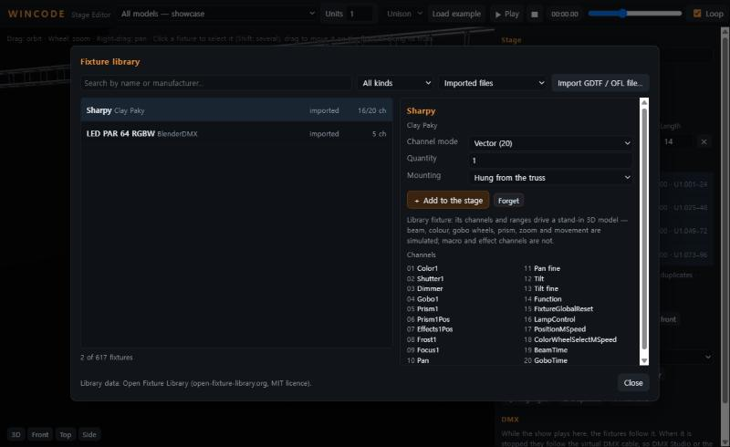
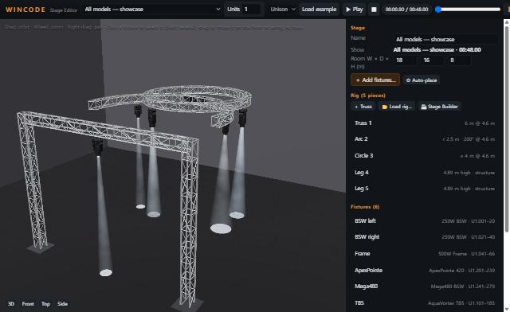
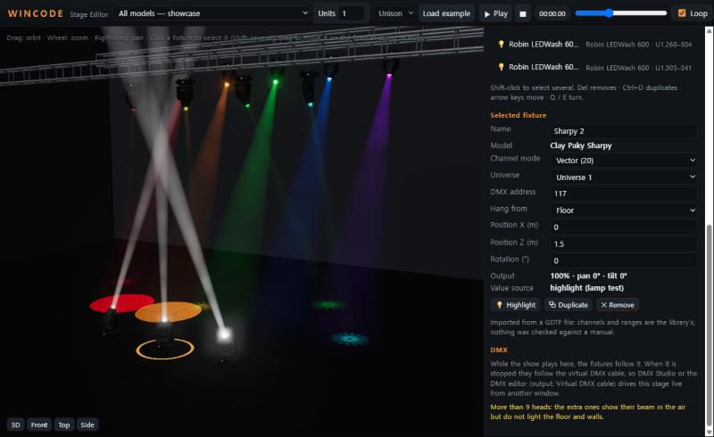
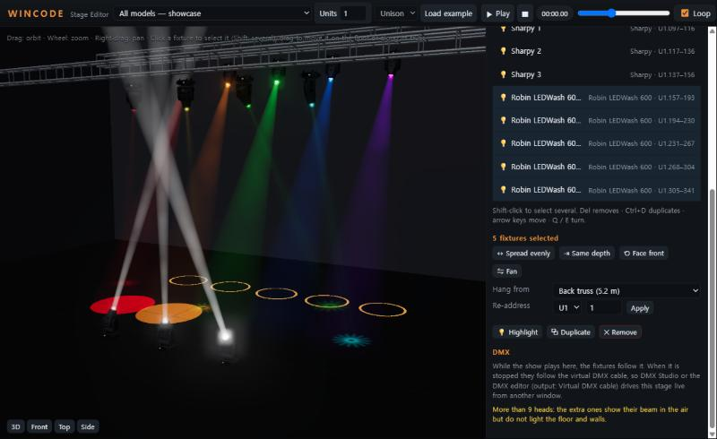
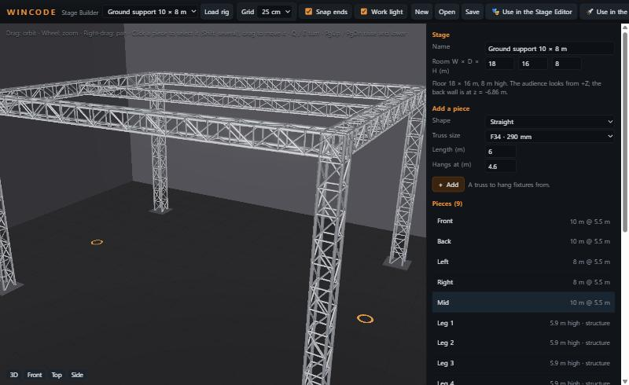

Wincode Stage Editor 사용 설명서 · 조명 라이브러리로 3D 무대를 만들고 DMX를 따라가는 모습 보기
프로그램 화면의 글자는 모두 영어입니다. 이 설명서에서는 버튼과 항목 이름을 화면에 보이는 영어 그대로 적고, 뜻을 한글로 설명합니다.
1. Stage Editor란
Stage Editor는 브라우저 안의 3D 무대입니다. 라이브러리에서 조명기를 골라 트러스에 달거나 바닥에 세우고 DMX 주소를 줍니다. 콘솔이 DMX를 보내면 무대가 조명기의 동작을 보여 줍니다. 헤이즈 속의 빔, 색, 고보, 움직임이 그대로 나옵니다.

조명 시스템에서 "시각화" 쪽을 맡는 프로그램입니다. "콘솔" 쪽은 Wincode DMX Studio나 시뮬레이터에 내장된 DMX 편집기가 맡습니다.
| 조명기의 출처 | 수량 | 모습 |
|---|---|---|
| Wincode 모델 | 5종 | 설명서와 제품 사진으로 만든 전용 3D 외형. 전면 패널과 메뉴가 동작합니다. |
| Open Fixture Library (내장) | 127개 제조사 610종 | 조명기의 종류·치수·셀 배치로 만들어 낸 외형(무빙헤드, PAR, 바, 패널, 이펙트, 스캐너). 채널, 색, 빔은 그 조명기 것 그대로입니다. |
| 가져온 파일 — GDTF 또는 Open Fixture Library JSON | 가져온 만큼 | 3D 모델(3DS 또는 glTF)이 들어 있는 GDTF 파일은 그 모델로 보여 줍니다. 제조사가 만든 실제 형상을 단순화한 것이며, 실제 팬·틸트 축으로 움직입니다. 모델이 없는 GDTF 파일과 OFL 파일은 만들어 낸 외형을 씁니다. |
samcho93.github.io/wincodeMovingHead/stage.html 에서 열거나, 로컬에서 npm start 후 http://127.0.0.1:7740/stage.html 을 엽니다. Chrome이나 Edge를 쓰십시오.
2. 화면 구성

| 상단 바 | 하는 일 |
|---|---|
| 예제 목록 · Units · 스타일 · Load example | 쇼가 프로그램되어 있는 완성된 무대(3장). |
| ▶ Play · ■ · 시간 · 슬라이더 · Loop | 이 무대의 쇼를 재생합니다. |
| Haze · Work light | 공중에서 빔이 보이는 정도, 그리고 설치·배치용 밝은 작업등(페이지를 열면 켜져 있으며, 어두운 무대에서 쇼를 보려면 체크를 풉니다). |
| New · Open · Save | 스테이지 파일(11장). |
| ⟲ From editor · 🎚 DMX Studio · 🎛 Edit show · 🔦 Simulator | 빛을 만드는 프로그램들(12장)과 단일 조명기 시뮬레이터. |
| 오른쪽 끝의 표시 | Playing the show · Following the virtual DMX cable · No DMX — 지금 조명기가 어디서 값을 받고 있는지. |
| 3D 화면 | |
|---|---|
| 끌기 | 카메라 회전. |
| 휠 | 확대·축소. |
| 오른쪽 버튼으로 끌기 | 화면 이동. |
| 3D Front Top Side (왼쪽 아래) | 카메라 프리셋. Work light를 켠 Top이 배치용 평면도입니다. |
옆 패널에는 무대 이름, 트러스, 조명기 목록이 있고, 그 아래에 선택한 것의 설정이 나옵니다.
3. 예제와 재생
예제를 고르고 Load example을 누르면 현재 무대가 그 예제로 바뀌고 재생이 시작됩니다.
- All models — showcase: Wincode 모델 5종이 모두 나오는 48초 쇼.
- 모델별 예제: Units로 그 조명기를 몇 대 세울지 정하고(최대 8대), 스타일로 함께 움직이는 방식을 정합니다 — Unison, Mirror, Fan, Wave, Canon.
▶ Play / ❚❚ Pause와 ■로 쇼를 제어하고, 슬라이더를 끌어 위치를 옮기며, Loop로 반복합니다. 직접 만든 무대에는 쇼를 프로그램하기 전까지(12장) 쇼가 없습니다. 그동안은 들어오는 DMX를 따릅니다.
4. 조명 라이브러리
옆 패널의 ＋ Add fixtures…를 누릅니다.

- 검색합니다. 이름이나 제조사의 일부를 입력합니다. 단어를 여러 개 쓰면 더 좁혀집니다: spot 300, robe wash.
- 필요하면 필터를 씁니다. All kinds → 무빙헤드, 컬러 체인저, 픽셀 바, 블라인더, 스트로브 등. All sources → Wincode, Open Fixture Library, 가져온 파일.
- 조명기를 클릭합니다. 오른쪽에 제조사와 종류, 그리고 선택된 모드의 채널이 번호와 함께 나옵니다.
- 채널 모드를 고릅니다. 채널 목록이 따라 바뀝니다.
- Quantity: 몇 대를 추가할지(1–48).
- Mounting: Hung from the truss(트러스에 매달기) 또는 On the floor(바닥).
- ＋ Add to the stage를 누릅니다.
조명기는 한 줄로, 이미 선택된 상태로 들어옵니다.
- 트러스에서는 이미 달린 것 옆에 이어서 달리고, 비어 있으면 가운데 정렬됩니다. 트러스가 없으면 하나가 만들어집니다.
- 바닥에서는 앞쪽부터 비어 있는 첫 줄에 놓입니다.
- 주소는 자동으로 매겨집니다. 유니버스 1의 첫 빈 구간부터 쓰고, 가득 차면 다음 유니버스로 넘어갑니다.
목록의 각 줄에는 조명기가 가진 기능 — rgb(컬러 믹싱), gobo, prism — 과 채널 모드별 채널 수(예: 5/15/24 ch)가 나옵니다.
5. GDTF·OFL 파일 가져오기
라이브러리에 없는 조명기는 파일을 구해 라이브러리 창의 Import GDTF / OFL file…을 누르거나, 창 아무 곳에나 파일을 끌어다 놓습니다. 여러 파일을 한 번에 가져올 수 있습니다.

| 형식 | 구하는 곳 |
|---|---|
GDTF (.gdtf) | 조명 업계의 공개 조명기 형식(DIN SPEC 15800). 제조사들이 gdtf-share.com에 자사 조명기를 올려 두며, grandMA3, Vectorworks, Capture 등이 같은 파일을 씁니다. |
Open Fixture Library (.json) | open-fixture-library.org — 조명기를 그 사이트 형식으로 내려받거나, 사이트의 편집기로 직접 만듭니다. |
GDTF 파일에서 읽는 것: 이름과 제조사, 휠과 슬롯의 이름·색, 모든 DMX 모드의 채널·기능·값 구간, 빔 각도. 읽지 않는 것: 파일 안의 3D 모델, 그리고 지오메트리 참조로 반복되는 채널(픽셀 조명기의 셀은 한 번만 나옵니다).
가져온 조명기는 이 브라우저의 라이브러리에 남습니다. Forget은 라이브러리에서 지우며, 그 조명기를 쓰는 무대는 자기 사본을 그대로 갖고 있습니다.
6. 리그: 공간과 트러스
리그는 공간(방)과 그 안의 트러스를 합친 것입니다. Stage 영역에서 공간 크기를, Rig 영역에서 트러스 조각을 다룹니다.

| 항목 | 하는 일 |
|---|---|
| Room W × D × H (m) | 공간의 폭, 깊이, 높이. 폭과 깊이는 6–60 m, 높이는 3–20 m입니다. 카메라 버튼도 크기에 맞춰 움직입니다. |
| ＋ Truss | 무대를 가로지르는 직선 트러스를 추가합니다. |
| 📂 Load rig… | 공간과 트러스를 미리 만들어 둔 리그, Stage Builder에 열려 있는 리그, 또는 리그 파일로 바꿉니다. 매달려 있던 조명기는 새 트러스에 나눠 매달리고, 바닥에 있던 것은 그대로 있습니다. |
| 🏗 Stage Builder | 이 스테이지의 리그를 리그 제작 프로그램인 Stage Builder(16장)에서 엽니다. 만든 결과는 Load rig…로 다시 가져옵니다. |
| 목록의 한 줄 | 누르면 그 조각이 열립니다: 이름, 모양(직선, 수직, 원, 호), 트러스 규격, 길이나 반지름, 위치, 높이, 회전. ⫿ Add legs는 그 아래에 타워를 세우고, ✕ Remove piece는 조각을 지웁니다. 매달려 있던 것은 바닥으로 내려갑니다. |
| ⚙ Auto-place | 조명기를 자동으로 매답니다. 선택한 조명기(선택이 없으면 전부)를 모든 트러스에 길이에 비례해 나누고 각 트러스에서 같은 간격으로 놓습니다. 목록에서 조각 하나를 열어 두면 그 조각에만 매답니다. |
조명기는 자기 트러스를 따라갑니다. 트러스를 옮기거나 돌리거나 높이·모양을 바꾸면 함께 움직입니다. 조명기는 직선 트러스, 원, 호에 매달 수 있고, 타워(수직)는 리그를 받치기만 합니다.
7. 선택과 이동
| 동작 | 방법 |
|---|---|
| 하나 선택 | 무대나 목록에서 클릭. 바닥에 주황색 고리가 표시됩니다. |
| 여러 개 선택 | Shift-클릭(또는 Ctrl-클릭)으로 추가. 무대와 목록 모두 됩니다. |
| 전체 선택 · 해제 | Ctrl+A · Esc, 또는 무대의 빈 곳 클릭. |
| 이동 | 선택한 조명기를 끕니다. 선택된 것이 모두 10 cm 단위로 함께 움직입니다. 트러스에 달린 조명기는 모양이 어떻든 자기 트러스를 따라 미끄러집니다. |
| 미세 이동 | 방향키: 10 cm. Shift와 함께: 50 cm. 위/아래 키는 멀어지는 쪽/가까워지는 쪽입니다. |
| 회전 | Q / E: 왼쪽/오른쪽으로 15°. |
| 복제 | Ctrl+D. 사본은 오른쪽 60 cm에 놓이고 다음 빈 주소를 받습니다. |
| 삭제 | Del. |
키는 커서가 입력 칸에 있지 않을 때 동작합니다.
8. 조명기 한 대: 패치와 위치

| 항목 | 뜻 |
|---|---|
| Name | 목록에 나오는 이름. 무대를 넘겨받는 콘솔에도 이 이름이 나옵니다. |
| Channel mode | 조명기의 채널 구성 중 어느 것으로 설정되어 있는지. 콘솔이 쓰는 모드와 같아야 합니다. |
| Universe · DMX address | 조명기가 수신하는 곳. 목록에는 차지하는 구간이 나옵니다: U1.117–136. |
| Hang from | Floor(바닥) 또는 트러스 중 하나. 매달린 조명기는 실제처럼 거꾸로 달립니다. |
| Position X · Z (m) Along the truss (m) | 바닥에서는 좌우와 앞뒤. 트러스에서는 트러스 시작점에서 길이 방향으로 잰 거리. |
| Rotation (°) | 조명기 전체를 수직축 둘레로 돌립니다. |
| Aim (°) | 틸트가 없는 조명기(PAR, 바)에만 나옵니다. 고정해 둔 각도이며, 0은 트러스에서 수직 아래, 바닥에서 수직 위입니다. |
| Output | 지금 이 순간의 밝기, 팬, 틸트. |
| Value source | DMX … Hz, no DMX signal, 또는 highlight (lamp test). |
Wincode 모델은 🔦 Open in simulator로 그 조명기만 따로 열어 전면 패널과 메뉴를 볼 수 있습니다.
9. 여러 대를 한꺼번에

| 도구 | 하는 일 |
|---|---|
| ↔ Spread evenly | 선택한 것 중 가장 왼쪽과 가장 오른쪽 사이에 같은 간격으로 놓습니다. 한 자리에 겹쳐 있으면 1.2 m 간격으로 펼칩니다. |
| ⇥ Same depth | 선택한 바닥 조명기를 첫 번째 것의 깊이에 맞춰 한 줄로 놓습니다. |
| ⟲ Face front | 모두 회전 0. |
| ⇋ Fan | 가운데를 기준으로 회전을 좌우 대칭으로 줍니다. 왼쪽 절반은 한쪽으로, 오른쪽 절반은 반대쪽으로 돕니다(정해 둔 각도가 없으면 30°). |
| Hang from | 선택 전체를 트러스나 바닥으로 옮깁니다. |
| Re-address | 유니버스와 시작 주소를 고르고 Apply를 누르면, 선택한 조명기가 왼쪽부터 오른쪽으로 연속 주소를 받습니다. 다른 조명기가 쓰는 구간은 건너뛰고, 유니버스가 차면 다음 유니버스로 이어집니다. |
| 💡 Highlight · ⧉ Duplicate · ✕ Remove | 선택 전체에 적용. |
10. Highlight — 램프 테스트
💡 Highlight는 쇼나 콘솔이 무엇을 보내든 선택한 조명기를 셔터 열림, 최대 밝기, 흰색으로 켭니다. 목록의 이름 앞에 전구가 붙습니다. 다시 누르면 조명기를 원래대로 돌려줍니다.
배치하면서 조명기가 어디를 향하는지 볼 때, 어느 조명기가 어느 것인지 확인할 때, 콘솔을 연결하기 전에 라이브러리 조명기의 빔을 볼 때 씁니다.
11. 스테이지 파일
| 버튼 | 하는 일 |
|---|---|
| Save | 이름.stage.json을 내려받습니다. 트러스, 위치, 패치, 쇼가 들어 있고, 사용한 라이브러리 조명기의 정의도 함께 들어 있어 어느 컴퓨터에서나 열립니다. |
| Open | 스테이지 파일을 엽니다. |
| New | 빈 무대. |
작업 중인 무대는 브라우저에도 보관되어, 다음에 페이지를 열면 그대로 돌아옵니다.
12. 빛 만들기: DMX Studio와 DMX 편집기
Stage Editor는 빛을 보여 주는 프로그램이고, 프로그램하는 곳은 아닙니다. 자기 쇼를 재생하지 않는 동안 무대는 가상 DMX 케이블을 따릅니다. 같은 사이트의 페이지끼리 이어지는 연결입니다.
| 프로그램 | 무대와 함께 쓰는 방법 |
|---|---|
| Wincode DMX Studio — 조명 콘솔 | 같은 조명기를 거기서 패치하고(같은 라이브러리가 있습니다) 🎭 3D Stage를 누릅니다. 스튜디오가 패치를 이 페이지에 넘기고, 조명기가 같은 주소로 여기에 나타납니다. 반대로 여기서 무대를 만들고 스튜디오 패치를 맞춰도 됩니다. 그 뒤 스튜디오에서 프로그램하면 무대가 따라옵니다. |
| DMX 편집기 — 시뮬레이터 내장 | 🎛 Edit show가 이 무대의 패치를 편집기에서 엽니다. 거기서 씬, 체이서, 이펙트, 쇼를 만듭니다. ⟲ From editor로 결과를 가져오면 여기서 ▶ Play로 재생되고 스테이지 파일에 저장됩니다. |
| 실제 콘솔 (Art-Net, sACN) | 직접은 안 됩니다. 무대는 가상 DMX 케이블만 듣습니다. 로컬 서버를 통해 Art-Net과 sACN을 받는 것은 단일 조명기 시뮬레이터 페이지입니다. |
오른쪽 위의 표시가 상황을 알려 줍니다. Following the virtual DMX cable이면 콘솔 페이지가 보내는 값을 무대가 따르고 있는 것입니다.
13. 라이브러리 조명기가 하는 일
Wincode 모델은 설명서를 보고 손으로 작성한 것입니다. 라이브러리 조명기는 채널 표에서 자동으로 만들어지므로, 표에 적힌 것만 합니다.
| 시뮬레이션되는 것 | 되지 않는 것 |
|---|---|
| 디머, 셔터, 스트로브(펄스·랜덤 포함) 실제 범위의 팬·틸트, 팬/틸트 속도, 연속 팬 회전 라이브러리의 색으로 된 컬러휠, 반색 위치, 휠 회전 RGB / RGBW / 앰버 / UV 등 믹싱, CMY 믹싱 고보휠 2개, 고보 회전과 인덱싱, 셰이크 프리즘과 프리즘 회전 · 줌 · 포커스 · 프로스트 |
조명기의 실제 모양(3D 모델이 든 GDTF 파일은 예외) — 그 밖에는 종류와 외곽 치수로 만들어 낸 외형입니다 GDTF 모델의 재질과 색 — 한 가지 색으로 칠해집니다 실제 고보 그림 — 대체 무늬가 그려집니다 바나 매트릭스의 개별 픽셀 — 한 빔으로 평균됩니다 매크로, 이펙트, 프로그램, 유지보수 채널 아이리스, 프레이밍 셔터, 색온도 채널 전면 패널과 메뉴 |
라이브러리 데이터는 자원봉사자와 제조사가 작성한 것이며 조명기 설명서와 대조해 확인하지 않았습니다. 실제 공연 전에는 라이브러리 창의 채널 목록을 조명기 설명서와 맞춰 보십시오.
14. 10분 만에 무대 만들기
- 빈 무대로 시작합니다. New를 누릅니다. Work light는 페이지를 열면 켜져 있으니 그대로 둡니다.
- 스폿 네 대를 답니다. ＋ Add fixtures… → auro spot 300 검색 → 클릭 → Quantity 4, Hung from the truss → ＋ Add to the stage. 트러스가 생기고 조명기 네 대가 선택된 채로 달립니다.
- 켜서 봅니다. 💡 Highlight를 누릅니다. 흰 빔 네 줄이 수직으로 내려옵니다. Work light를 끄면 헤이즈 속의 빔이 보입니다.
- 뒤쪽 트러스를 추가합니다. ＋ Truss. 표에서 이름을 Back truss로, Height를 5.2, Length를 10으로 바꿉니다.
- 거기에 워시 다섯 대를 답니다. Robin LEDWash 600 5대를 트러스에 추가합니다. 다섯 대가 선택된 상태에서 Hang from을 Back truss로 바꾸고 ↔ Spread evenly를 누릅니다.
- GDTF 파일로 바닥 조명기를 놓습니다. 라이브러리에서 Import GDTF / OFL file…을 눌러
.gdtf파일을 고르고, Quantity 3, On the floor로 추가합니다. - 평면도로 확인합니다. Top을 누르면 두 트러스와 바닥 줄이 위에서 보입니다. 조명기를 원하는 곳으로 끌고, 작은 이동은 방향키로 합니다.
- 주소를 확인합니다. 목록에 각 조명기의 구간이 나옵니다. 한 그룹의 번호를 다시 매기려면 선택하고 Re-address에서 U1과 시작 주소를 정한 뒤 Apply를 누릅니다.
- 저장합니다. 옆 패널 맨 위에 이름을 입력하고 Save를 누릅니다.
- 빛을 만듭니다. 🎛 Edit show를 눌러 DMX 편집기에서 프로그램하거나, DMX Studio에서 같은 조명기를 패치해 거기서 작업합니다.

15. 한계와 문제 해결
| 질문 | 답 |
|---|---|
| 노란 줄로 "More than 9 heads"가 나온다. | 앞의 헤드 9개만 바닥과 벽을 비추고, 나머지는 공중의 빔만 보입니다. 화면을 부드럽게 유지하기 위한 제한입니다. 그림자는 단일 헤드 조명기 중 앞의 3대만 만듭니다. |
| 조명기가 켜지지 않는다. | 선택해서 Value source를 봅니다. no DMX signal이면 그 유니버스로 보내는 것이 없습니다. 신호가 있으면 모드와 주소가 콘솔과 맞는지, 셔터 채널이 열려 있는지 확인합니다. 셔터가 닫힌 조명기는 디머가 최대여도 어둡습니다. 💡 Highlight로 조명기 자체가 동작하는지 볼 수 있습니다. |
| 무대가 DMX Studio를 따라오지 않는다. | 두 페이지가 같은 사이트에서 열려야 합니다. 둘 다 samcho93.github.io이거나, 둘 다 로컬 서버(http://127.0.0.1:7740/stage.html과 …/studio/)여야 합니다. 그리고 무대 자체의 쇼는 멈춰 있어야 합니다. |
| 콘솔에서 패치한 조명기가 나타나지 않는다. | 범용 프로파일(단순 디머, RGB 등)에는 3D 모델이 없습니다. 라이브러리 조명기를 쓰십시오. |
| GDTF 파일이 거부된다. | 메시지에 이유가 나옵니다. DMX 모드가 없는 파일이나 GDTF 압축 파일이 아닌 것은 읽을 수 없습니다. 셀이 지오메트리 참조로 정의된 픽셀 조명기는 셀 하나만 들어옵니다. |
| 휠의 색이 이상하다. | 라이브러리에 적힌 색입니다. 라이브러리에 색이 없는 슬롯은 흰색으로 나옵니다. |
| 트러스를 앞뒤 방향이나 비스듬히 놓을 수 있나? | 됩니다. Rig 목록에서 조각을 열고 Rotation을 바꿉니다(90 = 앞뒤 방향). 원, 호, 타워도 있고, 공간 크기는 Stage 영역에서 정합니다(6장). |
| 다른 컴퓨터에서 가져온 조명기가 안 보인다. | 가져온 파일의 라이브러리는 브라우저에 속합니다. 스테이지 파일은 사용한 조명기를 함께 담고 있으니, 그 컴퓨터에서 스테이지 파일을 여십시오. |
16. Stage Builder
Stage Builder(rig.html)는 무대 자체, 곧 공간의 크기와 트러스 구조를 만드는 별도 프로그램입니다. 결과물은 리그 파일이며 Stage Editor와 Fixture Simulator에서 불러옵니다.

조각
| 모양 | 설명 | 고유 치수 |
|---|---|---|
| Straight (직선) | 수평 트러스. 회전 0은 무대를 가로지르고(가로), 90은 앞뒤 방향(세로)이며 그 사이 각도도 됩니다. | 길이 |
| Upright (타워) | 베이스 플레이트 위에 선 수직 트러스. 그라운드 서포트의 다리입니다. 조명기는 매달 수 없습니다. | 높이 |
| Circle (원형) | 수평 원형 트러스. | 반지름 |
| Arc (호) | 원의 일부. 회전 0이면 뒷벽 쪽으로 볼록합니다. | 반지름, 각도(10–350°) |
모든 조각에는 트러스 규격(코드 간격 220, 290, 400, 520 mm), 위치, 높이, 회전이 있습니다.
만들기
- 공간을 정합니다. Stage 영역의 Room W × D × H.
- 조각을 추가합니다. Add a piece에서 모양, 트러스 규격, 길이(또는 반지름과 각도), 높이를 고르고 ＋ Add를 누릅니다. 조각이 화면 가운데에 나타납니다.
- 제자리에 놓습니다. 무대에서 조각을 끌거나 Selected piece에 위치를 입력합니다. 조각은 위쪽 바의 Grid 간격으로 움직입니다. Snap ends가 켜져 있으면 조각의 끝이 다른 조각의 끝에 35 cm 안으로 다가갈 때 딱 붙어서, 트러스와 타워가 정확히 만납니다.
- 구조를 세웁니다. 트러스를 선택하고 ⫿ Add legs를 누르면 바닥에서 트러스까지 올라오는 타워가 양 끝 아래에 생깁니다(원형은 네 개). 수직 조각을 직접 추가해 모서리로 끌어다 놓아도 됩니다.
- 저장하거나 넘깁니다. Save는
이름.rig.json을 내려받습니다. 🎭 Use in the Stage Editor는 이 리그로 Stage Editor를 열고, 🔦 Use in the simulator는 조명기가 이 리그에 매달린 시뮬레이터를 엽니다.
| 키 | 동작 |
|---|---|
| 클릭 · Shift-클릭 | 조각 선택 · 선택에 추가 |
| 방향키 | 격자 한 칸 이동 (Shift: 1 m) |
| Q · E | 15° 회전 |
| PgUp · PgDn | 10 cm 올리기 · 내리기 |
| Ctrl+D · Del | 복제 · 삭제 |
미리 만들어 둔 리그
위쪽 바의 목록에 시작용 리그 여섯 가지가 있습니다: 앞·뒤 트러스, 골포스트, 그라운드 서포트 10 × 8 m, 원형과 앞 트러스, 호와 뒤 트러스, 루프 그리드 12 × 9 m. 같은 목록이 Stage Editor의 Load rig…와 시뮬레이터의 Stage에도 있습니다.
다른 프로그램에서 쓰기
| 프로그램 | 방법 |
|---|---|
| Stage Editor | 📂 Load rig… → 미리 만들어 둔 리그, From the Stage Builder(같은 브라우저의 Stage Builder에 지금 열려 있는 것), 또는 Open a rig file…. 그다음 조명기를 직접 매달거나 ⚙ Auto-place로 자동 배치한 뒤, 한 대씩 트러스, 트러스 위의 위치, 회전, 조준 각도를 고칩니다. |
| Fixture Simulator | 위쪽 바의 Stage: 기본 공간, 미리 만들어 둔 리그, From the Stage Builder, Open a rig file…. Mount: Truss이면 조명기가 리그의 첫 트러스 가운데에 매달립니다. |